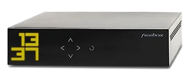

Pour bien comprendre les principes de l'adressage sur les réseaux informatiques, on peut commencer par se référer au système de numérotation des lignes téléphoniques des RTC (cf. chap. R1‑I ), qui est relativement bien connu du grand public.
- Chaque numéro de ligne commence par un indicatif international W – par exemple,
+33pour la France métropolitaine – qu'il n'est pas nécessaire de composer si l'appel est depuis le même territoire. - Le reste du numéro est à format variable selon le pays ; en France, le plan de numérotation actuel impose 10 chiffres pour les numéros longs avec le format
EZ AB PQ MC DUW oùEchiffre l'exploitant (obsolète),Zla zone géographique, etc. - Et même s'il n'y a pas de pénuries de numéros, il n'est pas rare de mettre en place dans certains lieux des lignes privées qui ne sont accessibles que via un standard téléphonique, pour des questions tant économiques (les tarifs d'abonnement dépendent du nombre de lignes souhaitées) que pratiques (la centralisation via un standard facilite le câblage et l'administration du réseau local).
Le plan de numérotation par zones géographiques n'a pas toujours été aussi complexe, il a évolué au fur et à mesure de l'augmentation du nombre d'abonnés et de la ramification du réseau W. Il est évidemment lié à l'ancien système de commutation du réseau RTC : il rationalisait les mécanismes d'établissement de la ligne de communication entre le numéro appelant et le numéro appelé. Et par simplicité pour les usagers, il reste inchangé même si aujourd'hui, les communications téléphoniques sont essentiellement opérées en VoIP W.
Les réseaux informatiques présentent une architecture plus complexe que celle des réseaux téléphoniques commutés (ne serait‑ce que par la variété des machines) et opèrent un mode communication asynchrone : durant un échange de données, il n'y a pas d'établissement d'une ligne physique de transmission continue entre les machines émettrice et réceptrice. C'est pourquoi la problématique de l'adressage est traitée de façon différente :
- ce sont les machines – plus précisément les interfaces réseau – et non pas les liaisons qui sont identifiées ;
- chaque interface est identifiée par au moins deux adresses (cf. chap.R2‑I ).
- L'adresse physique, en principe attribuée une fois pour toute par le constructeur de l'interface, permet à la sous‑couche MAC des protocoles comme Ethernet ou Wi‑Fi d'aiguiller les trames de données dans un réseau local.
- L'adresse logique qui permet au protocole IP de router les paquets de données à travers l'Internet ; en principe temporaire, l'obtention d'une telle adresse est l'enjeu principal de la possibilité pour une machine de communiquer.
De plus, le système d'adressage IP a significativement évolué depuis les premiers développement de l'Internet. La principale raison de cette évolution est la croissance exponentielle du nombre de machines à connecter et de l'épuisement des adresses qui a découlé d'un format initial d'adresses mal conçu.
Aujourd'hui coexistent les deux normes d'adresses incompatibles, dites IPv4 et IPv6 – la deuxième étant amenée à progressivement remplacer la première, du moins sur les infrastructures « publiques » de l'Internet.
Pour un technicien des réseaux, une bonne connaissance des systèmes d'adressage est absolument indispensable. Au delà du fait que les machines ne peuvent pas communiquer dans un réseau si elles sont dépourvues d'adresses – d'où l'importance de savoir les configurer – le plan d'adressage adopté détermine en grande partie l'architecture du réseau.
Ce chapitre a donc pour principal objectif d'apporter toutes les notions fondamentales et les connaissances pratiques pour maîtriser le sujet.
- On commence par décrire la configuration d'une interface qui, outre ses deux adresses physique et logique, comporte d'autres éléments indispensables pour la bonne exécution des protocoles de communication – masque du (sous‑)réseau, adresses IP de la passerelle par défaut et du résolveur DNS…
- On présente ensuite le système d'adressage physique MAC, qui ne pas de difficulté particulière. Il s'agit donc d'une section est relativement courte.
- On poursuit avec le système d'adressage logique IPv4, qui est bien plus complexe. On doit rappeler le formatage historique des adresses par classes de réseaux et les différentes techniques qui ont été inventées pour pallier au spectre de l'épuisement des adresses – notion de sous‑réseau, d'adresse privée, d'adressage dynamique.
- On termine avec le système d'adressage logique IPv6, qui gagne en importance au fur et à mesure de la migration engagée par les fournisseurs d'accès et les opérateurs de transport.
Configuration d'une interface réseau
Généralités
Pour qu'un ordinateur – ou tout autre machine terminale (serveur, imprimante, etc.) – puisse pleinement communiquer dans et hors d'un réseau local, il doit être équipé d'au moins une interface réseau qui soit correctement configurée. Cette configuration comporte les 5 paramètres suivants :
- l'adresse MAC de l'interface (pour l'étiquetage des trames de la couche liaison) ;
- une adresse IP disponible dans le réseau local (pour l'étiquetage des paquets de la couche réseau) ;
- le masque du (sous‑)réseau qui permet de déterminer à partir de l'adresse IP de l'interface celle du (sous‑)réseau local dans lequel l'interface est hébergée ;
- l'adresse IP de la passerelle par défaut du (sous‑)réseau local vers un réseau externe (typiquement, l'Internet) ; sinon, la machine ne peut pas communiquer au delà de son (sous‑)réseau local ;
- l'adresse IP d'au moins un résolveur DNS (domain name system – cf. chap. R1‑I ) ; sinon, la machine ne peut pas formuler des noms de domaines dans ses requêtes vers des ressources.
On verra plus loin que, sauf cas particuliers (notamment pour certaines cartes à microcontrôleurs), l'adresse MAC est mémorisée dans l'interface et automatiquement renseignée dans sa configuration.
En revanche, toute la configuration IP est susceptible d'être effectuée manuellement. Dans un tel cas, il faut être particulièrement attentif : la moindre omission ou erreur suffit à compromettre la capacité de l'interface à communiquer dans le réseau.
Cas d'un routeur
En termes de configuration, le cas d'un routeur est un peu différent de celui d'un ordinateur :
- il dispose forcément de plusieurs interfaces qui sont hébergées dans des réseaux différents, donc chacune doit avoir une configuration spécifique ;
- chaque interface doit également disposer d'une table de routage ; pour qu'elle puisse router correctement les datagrammes que l'interface reçoit, cette table met en correspondance des adresses IP de réseaux destinataires et de routeurs voisins.
Emploi d'un serveur proxy
Dans un réseau local d'entreprise ou de collectivité, il est usuel que les accès à l'Internet soient relayés par une machine dédiée appelée serveur proxy W, également dit serveur mandataire. Cette solution permet notamment :
- d'optimiser les temps d'accès aux ressources en mémorisant dans un cache volumineux W les pages web les plus fréquemment demandées ;
- de filtrer les accès aux ressources (interdictions de certains domaines, suppression de la publicité).
Chaque machine du réseau doit donc impérativement disposer de l'adresse IP du serveur proxy et des numéros de ports spécifiquement dédiés au traitement des requêtes par les protocoles http et https afin pouvoir accéder aux ressources de l'Internet.
Toutefois, ces informations ne sont pas considérées comme faisant explicitement partie de la configuration des interfaces. Elle sont rattachées au système d'exploitation de la machine, qui chapeaute toutes les interfaces.
Par ailleurs, certains navigateurs – notamment Firefox – permettent de définir le paramétrage spécifique de recours au proxy qui écrase celle définie dans le système d'exploitation du poste de travail.
Cette solution peut être utile lorsqu'on ne dispose pas des droits d'administration pour modifier les paramètres de recours au proxy. Mais sinon, elle n'est pas recommandée puisqu'elle n'est opérationnelle que pour un seul navigateur et ne permet d'accéder aux ressources de l'Internet par des commandes en ligne.
Modes de configuration des interfaces et du recours au proxy
La configuration d'une interface réseau peut être mise en œuvre :
- « manuellement », en imposant aux paramètres de la configuration des valeurs déterminées par l'utilisateur ou l'administrateur de la machine ;
- automatiquement, à l'aide du protocole DHCP W (dynamic host configuration protocol) si ce dernier est mis en œuvre dans le réseau local (cf. chap. R2‑II ).
Il en va de même pour la configuration du recours à un serveur proxy.
Le vocabulaire peut prêter à confusion car la configuration « manuelle » d'une interface peut être effectuée automatiquement par un script de commande qui s'exécute au démarrage de la machine. C'est pourquoi il est préférable de parler de configuration statique, au sens où les paramètres – et notamment l'adresse IP – sont attribués de façon définitive (ou du moins jusqu'à une éventuelle modification « manuelle » des paramètres).
Et a contrario, on emploie le terme de configuration dynamique lorsqu'on recourt au protocole DHCP, car les paramètres de la configuration sont alors déterminés par un serveur dédié. En particulier, l'adresse IP de l'interface est allouée pour une durée limitée (le plus souvent renouvelable ad libitum) en fonction des disponibilités.
Règles de choix du mode de configuration
En règle générale, il est préférable de choisir une configuration dynamique. Ainsi, on bénéficie des éléments qu'il n'est pas forcément facile d'obtenir (adresses de la passerelle par défaut, etc.) et de leur mise à jour automatique au gré des évolutions décidées par l'administrateur du réseau. On ne risque pas d'être confronté à une configuration obsolète.
Toutefois, pour pour des machines comme les imprimantes, les caméras, les serveurs, etc. qui hébergent des ressources ou des services partagés à disposition d'autres machines du réseau, une configuration statique peut se justifier. En effet, la pérennité d'une telle configuration simplifie l'accès aux ressources ou services hébergées.
Stockage et accès aux paramètres réseau d'une machine
Le stockage de la configuration d'une interface réseau dépend beaucoup du type de machine dans laquelle elle est intégrée, et de son éventuel système d'exploitation. Il peut évoluer au fil des versions de ce dernier.
Il est donc difficile d'exposer de manière fiable comment ce stockage est implémenté et quelles sont les procédures pour y accéder. Dans la pratique, il est souvent nécessaire de renouveler ses connaissances par des recherches sur le web. Les explications données ci‑après ne sont ni exhaustives, ni forcément pérennes.
Machines de type poste de travail
Sur une machine de type poste de travail, la configuration des interfaces réseau et du recours à un serveur proxy est le plus souvent stockée dans des fichiers binaires. Ces derniers ne sont accessibles en lecture et écriture que via des fenêtres de dialogue du système d'exploitation ou des commandes en ligne.
Les accès ne requièrent pas forcément les droits d'administration de la machine.
- Sur un PC Windows, on peut notamment accéder à la configuration des interfaces réseau par un clic‑droit sur l'icône de la connexion réseau dans la barre des tâches.
- Sur un PC Linux, on peut également accéder à la configuration des interfaces réseau via des fenêtres de dialogue. Même si ces fenêtres sont présentées différemment, on y trouve les mêmes éléments.
- Avec certaines distributions Linux, on peut également agir en modifiant un fichier de configuration. Par exemple, sur une carte Raspberry Pi (système Linux Raspbian), il suffit d'éditer le fichier
dhcpcd.conf(pour DHCP client daemon configuration) placé dans le dossier/etc. Au démarrage de la carte, ce fichier est lu par le système pour configurer l'interface Ethernet intégrée, identifiéeeth0. - Il peut légitimement sembler contre‑intuitif de donner une configuration statique à une interface dans un fichier nommé en référence à un système de configuration dynamique. Néanmoins, cette solution présente l'avantage d'identifier facilement le fichier de paramétrage de l'interface Ethernet, ce qui n'est usuellement pas le cas dans les distributions de Linux.
- Quant au paramétrage de l'interface Wi‑Fi, il sera abordé seulement au chap. R3‑IV car il nécessite de bien comprendre la problématique et les solutions pour la sécurité propre aux connexions sans fil.
/etc/NetworkManager/system-connections
On peut visualiser leur contenu en saisissant la commande
sudo cat nom du fichier. ip (anciennement ifconfig W). 
Cartes à Microcontrôleur
Sur une carte à microcontrôleur dotée d'au moins une interface réseau, la configuration IP est codée par les instructions du programme utilisateur (rappelons qu'il n'y a pas de système d'exploitation). Sachant la complexité des protocoles de communication mis en œuvre, il est vivement recommandé de recourir à une bibliothèque de fonctions spécialisées.

Pour accéder au réseau, une carte Arduino peut être équipée d'un shield Ethernet qui embarque un ASIC de communication WIZnet W5500 (cf. chap. R1‑I ) et un lecteur de carte Micro‑SD (cf. la photo ci‑contre).
Le shield communique avec la carte Arduino par un ensemble de broches de son port numérique formant un bus SPI W (serial peripheral interface). Il s'agit d'un bus de terrain maître‑esclave à adressage physique. La carte Arduino est le maître, elle sélectionne l'esclave avec lequel elle veut échanger des données via une broche spécifique à chaque esclave – la broche dite SS pour slave select.
Pour une exploitation facile du shield, on utilise les modules de bibliothèque SPI et Ethernet qui sont l'un et l'autre intégré par défaut dans le logiciel Arduino IDE. Pour cela, il suffit de coder :
- en préambule du programme, les directives d'inclusion de ces modules (cf. les ligne nº 2 & 3 dans le programme ci‑après) et la mémorisation de l'adresse MAC de l'interface dans un tableau de 6 octets (ligne nº 6) ;
- dans la fonction
setup, l'appel de la méthodeEthernet.initavec pour argument le numéro de la broche SS qui sélectionne l'ASIC Ethernet (cf. les lignes nº 4 et 9 dans le programme ci‑après).
En fait, le module de bibliothèque Arduino Ethernet G comporte 15 fichiers sources et fait également appel à plusieurs fichiers du noyau : Client.h, Server.h, IPAddress.h et IPAddress.cpp (cf. ce lien pour les cartes à cœur AVR). Et dans le fichier Ethernet.h sont codées les directives d'appel des fichiers Client.h, Server.h et Udp.h qui eux‑même appellent d'autres fichiers par des directives d'inclusion.
Dans le fichier Ethernet.h G, on trouve la déclaration de la classe EthernetClass (lignes nº 74 à 145) et la déclaration de l'objet Ethernet (ligne nº 147) comme une instance de cette classe.
Avec ces modules de bibliothèque, il est assez intuitif donner à l'interface une configuration statique IPv4. Par exemple, dans le programme ci‑après, on a codé dans la fonction setup :
- aux lignes nº 13 à 16, quatre instanciations par constructeur W de la classe
IPAddresspour mémoriser respectivement les éléments de cette configuration – à savoir l'adresse IP, le masque de sous‑réseau, la passerelle par défaut et le résolveur DNS primaire ; - à la ligne nº 17, l'appel la méthode
Ethernet.beginpour établir la connexion au réseau avec comme arguments l'adresse MAC de l'interface et tous les éléments de la configuration IP préalablement mémorisés.
#include <SPI.h>
#include <Ethernet.h>
const int SPI_SS_ETHERNET_PIN = 10; // choice depends of the Arduino board
byte mac[] = {0x90, 0xA2, 0xDA, 0x0D, 0x15, 0x43};
void setup() {
Ethernet.init(SPI_SS_ETHERNET_PIN);
/* ===== Dynamic IP config - uncomment next line */
// Ethernet.begin(mac);
/* ===== Static IP config - uncomment the next 5 lines */
IPAddress ip (192, 168, 1, 20);
IPAddress subnet (255, 255, 255, 0);
IPAddress gateway (192, 168, 1, 1);
IPAddress dns ( 8, 8, 8, 8);
Ethernet.begin(mac, ip, dns, gateway, subnet);
// =======================================================
Serial.begin(115200);
if (Ethernet.linkStatus() == LinkON) {
Serial.println("Network connection successful :)");
Serial.print("IPv4 = "); Serial.println(Ethernet.localIP());
Serial.print("Gateway = "); Serial.println(Ethernet.gatewayIP());
Serial.print("DNS = "); Serial.println(Ethernet.dnsServerIP());
Serial.println("");
}
else {
Serial.println("Network connection failed :(");
}
}
void loop() {
delay(10);
}
Par ailleurs, on peut obtenir dans le programme toutes les informations relatives à la connexion au réseau de l'interface grâce à des méthodes dédiées (toutes sans argument) :
-
Ethernet.linkStatuspour connaître l'état de la connexion A – elle retourne l'une des trois constantes énumérées suivantesUnknown,LinkONouLinkOFF; -
Ethernet.localIPpour obtenir l'adresse IP de l'interface A ; sa valeur de retour s'affiche directement sur le moniteur série en notation décimale pointée via la méthodeSerial.printouprintln; -
Ethernet.subnetMaskpour obtenir le masque de sous‑réseau associé A ; idem pour l'affichage sur le moniteur série de sa valeur de retour ; - etc. – cf. la même page de référence générale A.
De même, il existe des méthodes pour modifier individuellement, au fur et à mesure du programme, tel ou tel élément de la configuration IP de l'interface :
Remarque : pour les mêmes raisons de complexité qu'exposées supra dans le cas des cartes Raspberry Pi , on abordera seulement au chap. R3‑IV le paramétrage d'une interface Wi‑Fi de carte à microcontrôleur – typiquement, une carte à SoC ESP8266 (cf. chap. C1‑III C).
Liste des interfaces réseau d'une machine
On peut lister la totalité des interfaces réseau physiques et virtuelles sur une machine par une commande en ligne, typiquement :
-
ipconfig /allsur un PC Windows ; -
ip a(apour address) sur une machine Linux.
La liste obtenue étant souvent longue, il importe de savoir à quoi correspondent les différentes interfaces identifiées. Et là encore, les désignations dépendent du système d'exploitation de la machine.
- sur un PC Windows, elles sont libellées clairement, typiquement :
-
Carte Ethernet Local Area Connexion -
Carte réseau sans fil Wi-Fi - mais sur une machine Linux, elles sont désignées par des abréviations ou des codes plus ou moins complexes :
- anciennement
eth0,eth1, etc. pour les cartes Ethernet, etwlan0,wlan1pour les cartes Wi‑Fi ; - mais, sur les versions récentes (ultérieures à 2015) de certaines distributions, par exemple
enp0s31f6; ces codes sont basés sur la technique dite predictable interface naming dont on peut trouver des explications au lien suivant .
Interface virtuelle de rebouclage
Tout poste de travail est doté d'une interface virtuelle de rebouclage W créée par le système d'exploitation.
Cette interface est automatiquement dotée de l'adresse IPv4 127.0.0.1 et IPv6 ::1.
L'interface virtuelle de rebouclage permet de tester le bon fonctionnement des protocoles de communication installés sur la machine sans nécessiter de connexion à un réseau.
Certains systèmes d'exploitation attribuent à l'interface de rebouclage par convention l'adresse MAC 00-00-00-00-00-00.
Le système d'adressage physique MAC
Généralités
On appelle adresse MAC W d'une interface réseau son identifiant numérique (un nombre entier positif) utilisé par divers protocoles (Ethernet, Wi‑Fi, Bluetooth) de la couche liaison (niveau 2) du modèle OSI.
Plus précisément, l'adresse MAC sert à indiquer respectivement les interfaces émettrice et destinataire dans l'en‑tête de toute trame de donnée émise sur une liaison. Cette tâche d'étiquetage est dévolue à ce qu'on appelle la sous‑couche MAC W (medium access control).
Attribuée initialement par le constructeur de l'interface, l'adresse MAC est le plus souvent « gravée » dans une mémoire morte (ROM) de l'interface, c'est pourquoi on parle d'adresse physique (en anglais, de burned‑in address). Elle est parfois aussi indiquée par une étiquette collée au dos de la carte ou de l'équipement.
Dans le cas particulier des cartes Arduino ou shields disposant d'une connectivité Ethernet, l'adresse MAC n'est même pas gravée dans une puce. Elle est simplement indiquée sur une étiquette (cf. chap. R1‑I ), que l'on peut exploiter pour configurer l'interface dans le code du programme utilisateur.
Dans un segment de réseau (typiquement la topologie en étoile d'un switch), tout conflit entre deux interfaces partageant la même adresse compromettrait le bon acheminement des trames de données par les protocoles de la couche liaison. Chaque constructeur veille donc à attribuer une adresse MAC unique à chaque interface qu'il produit.
Contre‑intuitivement, il est possible de changer l'adresse MAC d'une interface dès lors que l'on possède les droits d'administration de la machine, ou que l'on a accès au code source du programme s'il s'agit d'une carte à microcontrôleur. Cette fonctionnalité permet notamment d'empêcher le pistage d'une interface dans un réseau public, tout en ne risquant pas d'engendrer des conflits car il est extrêmement improbable que deux adresses MAC générées aléatoirement soient identiques. Mais il ne s'agit le plus souvent que d'un changement logiciel, qui opère au niveau du pilote de l'interface, et non pas de sa mémoire morte.
Les formats d'adresse MAC
Les adresses MAC sont codées conformément à des formats normalisés dans le standard 802 de l'IEEE (cf. chap. R1‑I et W).
Dans ce standard, le terme pour désigner une adresse est « extended unique identifier », abrégé EUI.
Deux formats d'adresse MAC existent :
- l'EUI‑48 codé sur 48 bits, soit 6 octets, qui est utilisé dans les principaux protocoles de la couche liaison – Ethernet (cf. chap. R3‑III ) et Wi‑Fi (cf. chap. R3‑III ) ;
- l'EUI‑64 codé sur 64 bits, soit 8 octets, qui utilisé notamment pour le protocole IPv6 (cf. infra ) et certaines technologies domotiques ou autres (ZigBee, LoRaWan – cf. chap. R3‑V ) ;
Notation hexadécimale
Quel que soit son format, une adresse MAC est un nombre entier positif – un numéro – qu'on affiche toujours en base 16, octet par octet, chacun étant exprimé sur 2 digits. On parle de notation hexadécimale.
Par souci de lisibilité, les octets sont séparés les uns des autres par des séparateurs : (en anglais, colon) ou - (en anglais, dash), ce symbole étant à privilégier pour éviter les confusions avec la notation des adresses IPv6.
Dans le même objectif, l'usage veut qu'on y représente les valeurs spécifiquement hexadécimales des digits par les lettres majuscules A à F.
On rappelle que sur un octet, on peut stocker n'importe quel nombre entier positif compris entre 0 et 255. En base 16, cet intervalle est encodable sur exactement 2 digits.
Même s'il n'est jamais nécessaire de convertir une adresse MAC en base 10, il est souhaitable ici de bien comprendre le principe de l'écriture des nombres en base 16. Le tableau ci‑dessous donne quelques valeurs remarquables pour fixer les idées :
| base 10 | 0 | 15 |
16 | 127 |
128 | 255 |
|---|---|---|---|---|---|---|
| base 16 | 00 |
0F |
10 |
7F |
80 |
FF |
Pour revoir quelques notions sur codage en base 16, on pourra consulter le chapitre C3‑II sur les types entiers C.
- Dans l'exemple supra , l'adresse MAC du shield Ethernet Arduino est dans le programme sous la forme d'un tableau de 6 entiers de type
byte:byte macAddress[] = {0x90, 0xA2, 0xDA, 0x0D, 0x15, 0x43}; - Sur un PC doté d'un système Linux Mint et d'une interface réseau Ethernet, on obtient son adresse MAC via la commande :
ip link | grep ether
et on obtient une sortie comme par exemple :
link/ether f8:32:e4:44:c4:2e brd ff:ff:ff:ff:ff:ff
0x requis pour exprimer une constante littérale en base 16. 90-A2-DA-0D-15-43
Le format EUI‑48
Le format d'adresse MAC EUI‑48 W (6 octets, soit 48 bits) se décompose en deux parties de 3 octets chacune. Dans le sens de lecture, on a :
- d'abord l'OUI W (organizationally unique identifier), numéro attribué par l'IEEE qui identifie le constructeur de l'interface (sauf s'il s'agit d'adresses spéciales) ;
- ensuite le NIC (network interface controller) specific identifier, numéro attribué par le constructeur spécifiquement à chaque interface produite.
Le format EUI‑48 permet d'encoder environ 2,8 × 1014 adresses différentes (en fait, 248), soit près de 281 000 milliards. Ce nombre peut sembler très grand mais il est dimensionné pour une centaine d'années de production d'interfaces seulement.
De plus, sachant que sur 3 octets, on peut encoder environs 16 millions d'identifiants :
- le nombre d'identifiants possibles pour le champ OUI est a priori surdimensionné (le nombre de constructeurs se chiffre tout au plus en centaines) ;
- le nombre d'identifiants possibles pour le champ NIC est a priori sous‑dimensionné (par exemple, plus de 40 millions de cartes Raspberry Pi ont déjà été vendues).
Un même constructeur peut donc demander plusieurs numéros OUI à l'IEEE pour disposer de plus d'adresses pour identifier les interfaces qu'il produit.
- Il existe des pages web – par exemple celle‑ci – qui affiche le nom du constructeur à partir d'une adresse MAC saisie.
- On trouve également une page web où sont recensés un grand nombre d'identifiants de constructeurs. En faisant une recherche dans la page (
Ctrl‑F), on peut donc trouver le ou les identifiants associés à un constructeur.
Par ailleurs, sur le premier octet de l'OUI spécifie deux caractéristiques de l'adresse :
- le bit de rang 0, dit I/G (pour individual/group), précise si l'interface est capable de prendre en charge les diffusions de trames :
- simplement en unicast, avec la valeur
0(octet pair) ; - ou aussi en multicast, avec la valeur
1(octet impair). - le bit de rang 1, dit U/L (pour universal/local), précise si l'adresse attribuée est de catégorie :
- universelle (universally administrated address ou UAA), c'est‑à‑dire attribuée par le constructeur et conforme au standard de l'IEEE, avec la valeur
0; - locale (locally administrated address ou LAA) dans le cas contraire, avec la valeur
1.
Dans l'adresse 90-A2-DA-0D-15-43 du shield Ethernet Arduino donnée supra , le premier octet 90 s'écrit 10010000 en binaire. Il s'agit donc :
- d'une interface qui opère en unicast uniquement (bit I/G à
0) ; - d'une adresse universelle (bit U/L à
0).
Le format EUI‑64
Détermination de l'adresse MAC d'une interface
En l'absence d'inscription sur l'équipement, on a vu supra qu'il est facile de déterminer l'adresse MAC de son (ou ses) interface(s) via une fenêtre de dialogue ou une commande en ligne. Mais encore faut‑il pouvoir être connecté sur la machine que cette interface équipe…
Lorsqu'on raccorde au réseau un équipement qui ne possède ni clavier ni écran permettant d'ouvrir une fenêtre et de saisir une commande – c'est par exemple le cas d'une caméra IP comme celle en photo ci‑contre – le moyen usuel d'en prendre le contrôle consiste à ouvrir une connexion distante depuis un poste de travail du réseau, typiquement :
- une session
sshW dans un terminal de commande ; - ou encore une page web dans un navigateur si l'équipement embarque un serveur web.
Dans ces deux cas, la connexion requiert la saisie de l'adresse IP de l'équipement. Or s'il est configuré en client DHCP comme c'est très souvent le cas par défaut, cette adresse ne peut être connue préalablement puisqu'elle est choisie par le serveur DHCP. Un moyen usuel consiste, à l'aide d'un logiciel analyseur de réseaux (cf. chap. R1‑II ), à scanner la plage d'adresses IP dynamiques que distribue le serveur DHCP et y chercher celle de l'équipement. Si le réseau local comporte déjà plusieurs machines du même constructeur, pour éviter toute confusion, la meilleure solution consiste à identifier l'équipement avec son adresse MAC ! Mais on se trouve alors pris dans un cercle vicieux, puisqu'on cherche précisément à déterminer cette information…
Plusieurs solutions sont néanmoins envisageables :
- raccorder préalablement l'équipement dans un très petit réseau local, où il ne peut pas être confondu avec une autre machine ; son adresse MAC peut alors être facilement identifiée par scan ;
- connecter/déconnecter successivement plusieurs fois l'équipement, afin de repérer dans la liste des adresses scannées celle qui apparaît/disparaît.
Le système d'adressage IPv4
Généralités
L'adressage logique dit « IP » est un des aspects du protocole IP W (Internet Protocol) de la couche réseau du modèle OSI (niveau 3) – cf. chap. R1‑I et chap. R1‑IV .
De façon générale, une adresse IP W est un nombre entier positif – un numéro – utilisé par le protocole IP pour identifier aussi bien les interfaces que les réseaux dans lesquelles ces dernières sont hébergées.
Plus précisément :
- dans l'en‑tête de tout datagramme routé par le protocole IP figurent les adresses IP respectives de l'interface émettrice et de l'interface ou du réseau destinataire (dans le cas d'un broadcast) ;
- dans les tables de routage sont mises en correspondance des adresses IP des réseaux destinataires connus avec celles des interfaces des routeurs voisins à qui envoyer les datagrammes pour un routage optimal.
Format d'une adresse IPv4
Dans la norme IPv4, une adresse est encodée en binaire naturel sur 4 octets, soit 32 bits. Il existe donc 232, soit environ 4 milliards d'adresses différentes.
Dans les systèmes informatiques, l'affichage et la saisie d'une adresse IPv4 s'effectue octet par octet en notation décimale pointée, c'est‑à‑dire avec la valeur de chaque octet exprimée en base 10 (de 0 à 255 – les zéros non significatifs étant omis), séparée de la suivante par un point.
Une adresse IP comme 192.168.0.12 constitue un exemple typique dans un réseau local. On verra infra qu'il s'agit d'une adresse privée.
Le numéro 4 de version de la norme IPv4 n'a aucun rapport avec le fait qu'une adresse IPv4 est encodée sur 4 octets.
Notion de réseau – adresses de réseau et de broadcast
Conformément au protocole IP, un réseau est nécessairement formé d'un ensemble d'adresses consécutives. De plus, par convention :
- la première de ces adresses est réservée pour identifier le réseau lui‑même ;
- la dernière de ces adresses est réservée pour le broacast dans le réseau, c'est‑à‑dire la diffusion générale à toutes les adresses d'interface du réseau (cf. chap. R1‑II ) ;
Aucune de ces deux adresses ne peut donc être attribuée à une interface.
Typiquement, on peut définir un réseau local constitué de 256 adresses IP allant de 192.168.0.0 à 192.168.0.255, où :
-
192.168.0.0est l'adresse du réseau local lui‑même ; - de
192.168.0.1à192.168.0.254, on dispose de 254 adresses attribuables aux interfaces ; -
192.168.0.255est l'adresse de broadcast dans le réseau local.
Complexité de l'adressage IPv4

Même avec ses adresses relativement courtes, le système d'adressage IPv4 ne manque pas de complexité et pose de réelles difficultés de compréhension aux débutants. La raison principale de cette complexité tient à ses multiples évolutions depuis la première publication en 1981 du protocole IPv4 (RFC 791 ). On ne parlera pas des versions précédentes qui sont restées expérimentales.
En effet, lors de la mise en service à grande échelle de ce protocole, qui marque la création de l'Internet aux États‑Unis, le réseau ne comptait que quelques dizaines de routeurs (cf. la carte ci‑contre datée du 25 février 1982). Il était alors difficile d'imaginer qu'un système d'adressage comptant 5 classes et 4 milliards d'identifiants ferait sentir ses limites une dizaine d'années plus tard seulement.
Plusieurs évolutions – segmentation en sous‑réseaux, abandon des classes, adresses privés – ont donc été apportées au système d'adressage initial pour aboutir à celui que l'on connait aujourd'hui.
Pour surmonter les difficultés de compréhension, il est utile d'étudier ces évolutions et donc d'en passer par la description système initial d'adressage des réseaux par classes, même s'il est depuis longtemps obsolète. Cela permet en particulier de comprendre la notion de sous‑réseau et de savoir pourquoi cette notion est également caduque.
Principe initial d'adressage IPv4 par classes (obsolète)
Le système initial d'adressage IPv4, dit classful W, divise l'ensemble de toutes les adresses en 5 classes, respectivement notées par les lettres A à E.
Plus précisément :
- chaque classe d'adresse se voit attribuer une plage globale d'adresses définie par un préfixe binaire de largeur croissante (les 1, 2, 3 puis 4 bits de poids fort) ;
- les adresses de classe A, B et C sont regroupées en réseaux comportant des identifiants d'hôtes encodés sur respectivement 3, 2 et 1 octet ; on parle alors de réseaux de classe A, B ou C ;
- les adresses allant de
224.0.0.0à255.255.255.255sont réservées pour des usages ultérieurs ;
ce que détaille le tableau ci‑dessous.
| classe d'adresses |
préfixe binaire |
nombre de réseaux |
adresses par réseau |
forme des adresses |
|---|---|---|---|---|
| A | 0 |
128 | ≃ 16,7 × 106 | de 0.cdu.cdu.cdu à 127.cdu.cdu.cdu |
| B | 10 |
16 384 | 65 536 | de 128.000.cdu.cdu à 191.255.cdu.cdu |
| C | 110 |
≃ 2 × 106 | 256 | de 192.000.000.cdu à 223.255.255.cdu |
| D | 1110 |
– | – | de 224.0.0.0 à 239.255.255.255 |
| E | 1111 |
– | – | de 240.0.0.0 à 255.255.255.255 |
L'emploi des préfixes binaires et la structuration en octets des 3 classes A, B et C apportent un avantage remarquable. Par le préfixe de l'adresse d'une interface, on peut très facilement déterminer la classe du réseau dans lequel elle est hébergé, donc l'adresse du réseau, ce qui est essentiel pour le routage.
L'adresse d'interface 172.20.13.115 est de classe B (en effet, son premier octet 172 se code 10101100 en binaire dans lequel on trouve le préfixe 10). Donc, son réseau a pour adresse 172.20.0.0.
En revanche, ce système initial d'adressage s'est révélé rapidement malcommode. En effet, en définissant les identifiants de réseaux octet par octet, ces derniers formaient des ensembles d'adresses le plus souvent trop petits (réseaux de classe C) ou trop grands (réseaux de classe A ou B) au regard des parcs machines des organisations. Sans autre choix que de procéder en surdimensionnement, l'attribution des adresses par classes de réseaux a constitué la première cause de la pénurie qui n'a pas manqué de survenir.
En effet, pour n'importe quelle organisation humaine (entreprise, université…), même avec des moyens informatiques avancés, et si tant est que le besoin existe, il est très difficile de gérer de façon monolithique un réseau de classe A hébergeant plusieurs millions de machines. Pour une gestion efficace d'un grand nombre d'équipements, il faut segmenter – et cette règle reste valable même pour un réseau de classe B.
Ce système de préfixes binaires est employé de façon analogue pour l'encodage des caractères au format UTF‑8 (cf. chap. C3‑IX C).
Segmentation d'un réseau IPv4 en sous‑réseaux – notion de masque
Pour résoudre la trop faible variété des tailles de réseaux attribuables par classes, la norme IPv4 introduit dès 1984 (RFC 917 ) la notion de sous‑réseau.

La plage d'adresses d'un réseau de classe A, B ou C peut être segmentée pour constituer plusieurs sous‑réseaux indépendants, chacun ayant son adresse de réseau et son adresse de broadcast spécifiques.
Pour cela, on définit un mot binaire appelé masque de sous‑réseau — en anglais, subnet mask – formé sur 4 octets dans le sens usuel de lecture :
- d'une série de bits valant
1qui délimite dans une adresse IP la partie permettant d'identifier le réseau et le sous‑réseau (net and subnet identifier) ; - puis d'une série de bits valant
0qui délimite dans une adresse IP la partie permettant d'identifier une interface hébergée dans le sous‑réseau (host identifier).
Comme une adresse IP, une masque de sous‑réseau s'exprime en notation décimale pointée. Étant donné sa forme binaire (une série de 1 puis de 0), chacun de ses octets ne peut prendre qu'une des neuf valeurs décimales listées dans le tableau ci‑dessous :
| base 2 | 00000000 |
10000000 |
11000000 |
11100000 |
11110000 |
11111000 |
11111100 |
11111110 |
11111111 |
|---|---|---|---|---|---|---|---|---|---|
| base 10 | 0 |
128 |
192 |
224 |
240 |
248 |
252 |
254 |
255 |
De plus, un seul octet du masque ne peut prendre un valeur autre que 0 ou 255. C'est l'octet dans lequel se situe la transition entre la séquence des 1 et celle des 0.
Considérons un réseau de classe B d'adresse 172.20.0.0. En lui associant par exemple le masque 255.255.224.0, c'est‑à‑dire :
11111111.11111111.11100000.00000000
on le segmente en 8 sous‑réseaux de 25+8 = 213 = 8192 adresses chacun (13 est le nombre de 0 dans le masque). De plus :
- le 1er de ces sous‑réseaux a pour adresse
172.20.0.0, - le 2e de ces sous‑réseaux a pour adresse
172.20.32.0, - le 3e de ces sous‑réseaux a pour adresse
172.20.64.0, etc.
Détermination des adresses remarquables d'un sous‑réseau IPv4
Étant donné une interface configurée par son adresse IP et son masque de sous‑réseau, on peut déterminer les adresses remarquables du sous‑réseau par les opérations logiques bits à bits suivantes :
-
adresse IP sous‑réseau = adresse IP interface & masquesachant que&est l'opérateur logique « et » bits à bits – cf. chap. C3‑III C ; -
adresse IP broadcast = adresse IP sous‑réseau | ~ masquesachant que|et~sont respectivement les opérateurs logiques « ou » et « non » bits à bits – cf. chap. C3‑III C.
Considérons l'interface configurée par l'adresse IP 172.20.20.60 et le masque de sous‑réseau 255.255.224.0. On détermine les deux adresses remarquables suivantes :
-
adresse IP sous‑réseau = 172.20.60.40 & 255.255.224.0
= 172.20.32.0 -
adresse IP broadcast = 172.20.32.0 | ~ 255.255.224.0
= 172.20.63.255
10101100.00010100.00111100.00101000 adresse IP interface & 11111111.11111111.11100000.00000000 masque = 10101100.00010100.00100000.00000000 adresse IP sous‑réseau
10101100.00010100.00100000.00000000 adresse IP sous‑réseau | 00000000.00000000.00011111.11111111 ~ masque = 10101100.00010100.00111111.11111111 adresse IP broadcast
Abandon des classes de réseaux IPv4
Au début des années 1990 sont apparus la notion de page web et les premiers logiciels navigateurs. L'internet, jusque‑là cantonné aux universités et aux instituts de recherche scientifique, ainsi qu'aux départements R & D des entreprises technologiques, a commencé à présenter un grand intérêt commercial. Les demandes d'adresses IP ont fortement augmenté…
- Pour repousser le spectre grandissant de la pénurie d'adresse, mais aussi simplifier les algorithmes de routage, la notion de classe de réseaux a été abandonnée en 1993. L'espace des adresses IPv4 dans son ensemble a alors pu faire l'objet d'une segmentation fine.
- Le masque est devenu un paramètre indispensable de la configuration d'une interface, permettant à partir de son adresse IP de déterminer l'adresse du réseau dans lequel elle est hébergée.
C'est donc par inertie psychologique que le terme de « masque de sous‑réseau » (subnet mask) est encore employé aujourd'hui. En réalité, on doit parler seulement de masque de réseau (net mask).
Cette « nouvelle » méthode d'adressage est dite sans classe – en anglais, classless inter‑domain routing, abrégée CIDR. Elle est introduite par la RFC 1519 .
Elle permet également de rationaliser les tables de routage, par la technique dite d'agrégation des adresses W et donc des routes.
Notation abrégée du masque en adressage CIDR
Un masque de réseau présente donc toujours une forme très simple : une série de bits valant 1 suivie d'une série de bits valant 0. De ce fait, un masque peut s'exprimer par une notation plus plus concise que la valeur détaillée de ses 4 octets : il suffit d'indiquer le nombre de bits valant 1 qu'il comporte – ce nombre ne pouvant aller que de 0 à 32.
Pour désigner ainsi un masque de réseau, on fait précéder son nombre d'un caractère slash /, qui sert également de séparateur lorsque ce masque est associé à une adresse. C'est la notation abrégée dite CIDR.
Pour passer de la notation complète à la notation abrégée (et réciproquement), on peut coder un programme (cf. l'exercice 3 de la feuille C3 C) ou utiliser une page web de calcul spécialement conçue à cet effet, par exemple celle‑ci .
On a vu dans l'exemple supra que le masque 255.255.224.0 commence par une série de 19 bits valant 1 (puis 13 bits valant 0).
En notation CIDR, ce masque s'écrit tout simplement /19.
De même, l'association de l'adresse IP 172.20.20.60 et du masque 255.255.224.0 s'écrit simplement :
172.20.20.60/19
On peut aussi procéder par calcul mental.
- Pour passer de la notation décimale pointée à la notation abrégée, on compte 8 pour chaque octet valant
255et on décompose la valeur de l'octet de transition en une somme de puissances décroissantes de 2 (ou de se reporter au tableau supra ). - Pour passer de la notation abrégée à la notation décimale pointée, on effectue la division entière par 8 du masque pour déterminer le nombre d'octets valant
255. Quant à l'octet de transition, il est déterminé par le reste de la division, en calculant la somme des puissances décroissantes de 2 (ou en se reportant au tableau supra ).
En partant de sa notation décimale pointée, on calcule que le masque 255.255.224.0 compte 8 + 8 + 3 = 19 bits à 1. En effet :
224 = 128 + 64 + 32 = 11100000(2)
Il se note donc /19 en notation CIDR.
En partant de sa notation CIDR, on calcule que le masque /26 compte 26÷8 = 3 octets qui valent chacun 255. Le reste 2 de la division 26÷8 donne le nombre de bits valant 1 du dernier octet du masque, qui vaut donc 1100000(2) = 128 + 64 = 192.
Ce masque s'écrit donc 255.255.255.192 en notation décimale pointée.
Introduction des adresses IPv4 privées
Si l'abandon des classes de réseaux a indéniablement mis un terme au gâchis des adresses IP lors de l'attribution des blocs aux organismes demandeurs, il n'a pas suffi à écarter durablement le risque de l'épuisement des adresses disponibles en IPv4.
Aussi dès 1994 apparaît la notion d'adresse privée (introduite par la RFC 1597 et officialisée par la RFC 1918 en 1996) – d'où découle la notion de réseau privé – qui présente un double intérêt :
- permettre, dans le réseau global formé par l'interconnexion physique de toutes les machines, l'existence de parties privées, c'est‑à‑dire non accessibles à tous, et ce par un cloisonnement logiciel de bas niveau ;
- ce faisant réduire fortement le besoin en adresses uniques aux seules parties publiques du réseau global – ce qu'on appelle communément l'Internet.
Une adresse IP privée est une adresse IP qui n'est pas routée sur l'Internet, au sens où elle est exclue de toute table de routage des routeurs qui forment la partie publique des réseaux de transport et d'interconnexion de données le protocole IP.
On appelle réseau privé W un réseau de machines dont les interfaces réseau sont dotées d'adresses IP privées pouvant communiquer entre elles sans passer par l'Internet.
Adresses IPv4 privées d'usage général
Depuis 1996, l'IANA réserve les 3 blocs d'adresses IPv4 listés ci‑dessous, qui peuvent être librement segmentés et utilisés pour l'adressage des réseaux privés et des interfaces qu'ils hébergent :
-
10.0.0.0/8, soit environ 16,7 millions d'adresses comprises entre10.0.0.0et10.255.255.255; -
172.16.0.0/12, soit environ 1 millions d'adresses comprises entre172.16.0.0et172.31.255.255; -
192.168.0.0/16, soit 65 536 adresses comprises entre192.168.0.0et192.168.255.255.
En règle générale, par la vieille habitudes des classes de réseaux, il est usuel :
- pour les réseaux domestiques, d'employer le bloc d'adresses
192.168.0.0/24; - pour les réseaux locaux d'entreprises ou de collectivités, d'employer des blocs d'adresse
192.168.x.0/24ou172.x.0.0/16pour les interfaces des machines terminales (PC, imprimantes, serveurs…), segmentées selon les départements auxquels ces machines sont rattachées (recherche et développement, administration, direction, etc.) ;
192.168.1.0/24, 192.168.2.0/24 si l'on souhaite segmenter le réseaux en plusieurs VLAN ; 10.0.0.0/8 pour les principaux routeurs du réseau local, formant ce qu'on appelle un backbone par analogie avec un réseau de transport. Mais insistons sur le fait que dans un réseau local, à moins de recourir à d'anciennes versions de protocoles basés sur les classes de réseaux (comme, par exemple, RIP W), la liberté de segmentation des blocs d'adresses IP privées est totale.
Ainsi, rien n'interdit – et c'est même une pratique courante – de segmenter le bloc 10.0.0.0/8 avec le masque /24 (256 adresses) comme sur la figure ci‑dessous pour identifier les interfaces des routeurs d'un backbone.
En effet, chaque liaison entre deux routeurs constitue un réseau à part entière, avec seulement deux hôtes. Il serait donc absolument démesuré de lui associer un masque /8 (16,7 millions d'adresses), d'autant plus qu'on a ici 3 liaisons entre routeurs (on épuiserait les adresses en 10.0… dès la première liaison).
Remarque. Comme dans un réseau d'interconnexion public, il serait possible d'employer un masque /30 (4 adresses, donc 2 pour les interfaces puisqu'il faut laisser de côté l'adresse du réseau lui‑même et celle de broadcast). Néanmoins, ce choix est moins lisible que celui ci‑dessus car les adresses de réseaux ne se terminent pas toutes pas l'octet 0, mais par un multiple de 4 : 10.0.0.0/30, 10.0.0.4/30, 10.0.0.8/30, etc. Un tel choix ne se justifierait que si l'on avait plus de 256 liaisons à gérer.
Adresses IPv4 privées spéciales
En plus des adresses privées d'usage général, l'espace d'adressage IPv4 comporte également quelques blocs d'adresses privées qui remplissent des fonctions spéciales.
- Le bloc
127.0.0.0/8est réservé pour les interfaces virtuelles dites de rebouclage (loopback) – cf. supra . Il permet de constituer un réseau local interne à la machine. - Le bloc
169.254.0.0/16est réservé pour l'auto‑configuration des interfaces sur des adresses dites de lien locale (link‑local address). Ce processus peut être mis en œuvre par le système d'exploitation d'une machine dont une interface est en échec avec le protocole DHCP (cf. chap. R2‑II ). Il permet d'obtenir malgré tout une adresse IP qui permet à la machine de communiquer dans son réseau local. - La méta‑adresse
0.0.0.0est réservée pour diverses usages spéciaux, notamment les deux suivants. - C'est l'adresse adoptée pour la configuration initiale des machines dans le cadre du protocole DHCP (cf. chap. R2‑II ) ; en règle générale, elle identifie une interface qui n'a pas (encore) d'adresse IP.
- Associée au masque
/0, elle représente l'ensemble de toutes les adresses de destination possibles pour leur attribuer une route par défaut dans la table de routage d'une machine située sur un nœud terminal d'un réseau (typiquement, une station de travail). - L'adresse
255.255.255.255est réservée pour la diffusion générale restreinte (limited broadcast) applicable à n'importe quel segment d'un réseau local, notamment dans le cadre du protocole DHCP (cf. chap. R2‑II ). Elle permet l'envoi d'un paquet IP à toutes les machines du segment.
Toutes ces adresses privées spéciales ont la particularité d'être non‑routables en général, autrement dit pas seulement sur l'Internet, mais via n'importe quel routeur même dans un réseau local (passerelle, dorsale, etc.).
Elles ne sont donc pas relayées par les interfaces des routeurs, sauf celles qui sont spécialement configurées à cette fin (ce qui est typiquement le cas d'un relais DHCP).
La limitation de routage des adresses privées spéciales, notamment celle de broadcast limité, permet de ne pas saturer la bande passante par de trop nombreux datagrammes de diffusion qui se répandrait dans tous les segments d'un réseau local.
Connexion d'un réseau privé à l'Internet
Pour que les machines d'un réseau privé puissent avoir accès à l'Internet, il est nécessaire de disposer d'un routeur‑passerelle dont :
- au moins une interface est configurée avec une adresse IP publique ;
- au moins une autre interface est configurée avec une adresse IP privée du réseau – celle qui est en principe renseignée pour la passerelle par défaut dans la configuration de toutes les machines du réseau privé.
Simple en apparence, cette architecture nécessite, pour permettre le routage des paquets à travers la passerelle, de recourir à diverses techniques logicielles dites de translation d'adresse W – en anglais, network address translation ou NAT.
- Dans le cas le plus simple d'un réseau domestique qui, en règle générale, ne comporte un petit nombre d'adresses privées, une seule adresse IP publique suffit. On recourt alors à la technique appelée NAT overload ou NAPT (network address and port translation) ou encore simplement PAT (port address translation).
- Dans le cas d'un grand réseau local (plusieurs centaines de machines et éventuellement des serveurs ouverts), il est souvent nécessaire de disposer de plusieurs adresses IP publiques. On peut alors opter pour une technique de NAT dynamique où l'interface publique de la passerelle peut très rapidement changer d'adresse IP.
Les techniques de translation d'adresse présentent un intérêt décisif pour la sécurité des réseaux privés par le fait qu'elles masquent les adresses des interfaces hébergées dans ces réseaux. Dès lors, il est très difficile d'en prendre le contrôle par accès distant depuis l'extérieur.
Clef de voûte des réseaux privés en IPv4, les techniques de translation d'adresse contribuent activement à leur sécurité et permettent de faire de grandes économies d'adresses publiques. Néanmoins, elles posent des problèmes de compatibilité avec certains protocoles de communication, comme les connexions distantes (remote login) et les applications pair‑à‑pair.
Dans son sens général, le terme anglais translation est un faux‑ami : il se traduit usuellement en français par « traduction » .
Mais dans le cas des techniques de NAT, il ne s'agit pas de passer d'une langue à une autre (quoi qu'on puisse affirmer sans argument convainquant, par exemple ici ). Il semble plus pertinent de considérer qu'on parle de translation (mot transparent) dans un sens « géométrique », dans la mesure où l'on passe d'un espace d'adresses à un autre (idem pour les numéros de ports).
Quant au terme français de transposition, il pourrait sembler approprié mais il n'est pas en usage chez les professionnels des réseaux. En définitive, même si l'on pêche par anglicisme, l'expression translation d'adresse à l'avantage de faire immédiatement penser au terme anglais.
Adresses de multidiffusion IPv4
Dans un réseau, la multidiffusion ou diffusion multicast W consiste à émettre des données à des destinataires multiples sur une adresse IP de diffusion, comme s'il s'agissait d'un destinataire unique.
Ce sont les routeurs du réseau qui, lors qu'ils sont chargés de la transmission de ces données, les transfèrent aux adresses IP respectives des différents destinataires, ces derniers étant abonnés à l'adresse de diffusion.
En IPv4, c'est le bloc d'adresses 224.0.0.0/4 – c'est‑à‑dire allant de 224.0.0.0 à 239.255.255.255 constituant historiquement les adresses de classe D, cf. supra – qui est dévolu aux protocoles de multidiffusion W. Il comporte divers sous‑blocs réservés par l'IANA pour des usages spécifiques.
-
224.0.0.0/24est le local network control block . Il comprend 255 adresses de multidiffusion sur un (sous‑)réseau – donc, non routables sur l'Internet – chacune spécifique à un protocole ou un type de composant matériel ou logiciel. -
224.0.1.0/24est l'Internetwork control block . Il comprend 255 adresses de multidiffusion sur l'Internet – chacune spécifique à un protocole ou un type de composant matériel ou logiciel. - Les plages
224.0.2.0 - 224.0.2.0,224.3.0.0 - 224.4.255.255et233.252.0.0 - 233.255.255.255sont respectivement les ad‑hoc block I , II & III . Ces adresses routables sur l'Internet sont principalement réservés pour des applications propriétaires. -
239.0.0.0/8est l'administratively scoped block . Ce sont des adresses privées, donc non routables sur l'Internet. Et comme toutes les adresses privées générales (cf. supra ), elles peuvent être librement employées sur les réseaux locaux, mais spécifiquement pour mettre en œuvre des diffusions multicast.
224.0.0.2 est l'adresse de multidiffusion à tous les routeurs du (sous‑)réseau. 224.0.1.33 et 34 sont deux adresses de multidiffusion exploitées par le protocole RSVP W. 224.0.6.151 est une adresse de multidiffusion ad‑hoc réservée pour les photocopieurs de la marque Canon. Attribution des adresses IPv4 publiques
Historique de l'IANA et création des RIR
Rappelons que l'attribution des adresses IP publiques – c'est‑à‑dire routables sur l'Internet – est depuis 1998 placée sous l'autorité de l'IANA (Internet assigned numbers authority – cf. chap. R1‑I ).
Aux tous débuts des expérimentations de l'Internet (dès 1972), ce travail était accompli par une seule personne – John Postel W – au sein de l'USC (University of Southern California). À partir des années 1980, il dut quand même constituer une équipe pour le seconder, qui prit l'appellation IANA. Son existence et sa mission furent officialisées en 1988 par le gouvernement américain. Mais inévitablement, le développement des activités commerciales et l'explosion de la demande mondiale d'adresses IP au début des années 1990 finit par rendre cette organisation centralisée totalement inadéquate.
Au début des années 1990, afin d'en limiter le monopole stratégique par les États‑Unis, l'espace des adresses IPv4 encore non attribuées a été divisé en 256 blocs de 16 millions d'adresses (c'est‑à‑dire divisés par un masque CIDR /8) pour être peu à peu confiés à des organismes « régionaux » à l'échelle du globe – les regional Internet registries, en abrégé RIR W. Ces organismes sont apparus progressivement au fur et à mesure du développement des réseaux informatiques dans les différentes grandes régions du monde :
- le RIPE-NCC W (réseaux IP européens - network coordination centre), créé en 1992 pour couvrir l'Europe, la Russie et le Moyen‑Orient ;
- l'APNIC W (Asia Pacific network information center), créé en 1993 ;
- l'ARIN W (American registery for Internet numbers), créé en 1997 pour couvrir les États‑Unis et le Canada ;
- le LACNIC W (Latin America and Caribbean network information centre), créé en 1999 ;
- l'AFRINIC W (African network information Centre), créé en 2005.
En 2011, l'IANA a achevé l'attribution du dernier bloc dont elle disposait encore. En définitive, on peut voir sur le diagramme ci‑contre que la distribution a été très inéquitable entre les RIR – et ce d'autant plus qu'avant leur création, l'ensemble des adresses « historiques » a presque exclusivement bénéficié aux États‑Unis. Ce pays dispose aujourd'hui de près de 50 % de tous l'espace IPv4.
Quant aux adresses réservées, il correspond aux anciennes classes D (toujours utilisées pour le multicast) et E (non routables car incompatibles avec de nombreuses implémentations du protocole IP).
Rôle et fonctionnement des RIR
Un RIR est un organisme transnational à but non lucratif qui regroupe essentiellement des opérateurs de télécommunication, des fournisseurs d'accès à l'Internet et d'entreprises. Typiquement, chaque membre paye des frais d'entrée et une cotisation annuelle.
Le rôle d'un RIR consiste essentiellement à définir la politique de segmentation et de distribution à ses membres des blocs d'adresses reçus de l'IANA.

Le RIPE NCC compte plusieurs milliers de membres. Il en publie la liste par pays à partir de cette page web .
Grâce aux bases de données maintenues par les RIR, il est possible de localiser géographiquement une adresse IP. Ce service est disponible gratuitement sur des pages web comme celle ci .
Notion de LIR et de NIR
La plupart des membres d'un RIR agissent en qualité de local Internet registry, en abrégé LIR W. Ce sont eux qui mènent des activités commerciales en allouant des adresses IP aux clients finaux (les abonnés à l'Internet, qu'ils soient particuliers ou professionnels).
Par ailleurs, certains RIR (APNIC, LACNIC) comptent parmi leur membres des national Internet registries, en abrégé NIR W. Ce sont des agences étatiques qui peuvent ainsi exercer une coercition de l'Internet dans leurs pays respectifs.
Épuisement des adresses IPv4 publiques
L'ARIN et le RIPE NCC ont alloués les derniers blocs d'adresses IPv4 dont ils disposaient respectivement en 2015 et 2019 . Ils gardent cependant en réserve quelques adresses pour les besoins critiques au bon fonctionnement des réseaux (DNS, etc.) et pour aider à la migration vers la norme IPv6.
Quant aux autres RIR, ils ont fortement restreint leur politique d'attribution (par blocs de masque /22 au LACNIC et à l'APNIC ).
Bien qu'il existe des opportunités de récupération de blocs historiquement attribués mais inutilisés, et un marché secondaire de revente, l'épuisement des adresses IPv4 publiques W est devenu inéluctable dans les années 2020.
Et c'est d'ores et déjà une réalité tangible dans les pays les plus développés. C'est pourquoi ces derniers se sont engagés depuis longtemps dans la migration vers la norme IPv6.
En attendant, certaines alternatives sont envisagées, comme le recours à la translation d'adresse dans les réseaux de collecte des FAI, appelée carrier‑grade NAT, abrégée CGN W.
Cette technique permet notamment de remplacer les adresses publiques attribuées aux box Internet des particuliers par des adresses privées, la translation d'adresse étant alors opérée au niveau du routeur‑passerelle de jonction entre la boucle locale et le réseau de transport.
Néanmoins, cette solution pose les mêmes problèmes de compatibilité avec certains protocoles que pour les autres applications des techniques de NAT (cf. supra ). De surcroît, elle rencontre un problème juridique majeur, car il n'est pas toujours possible de garder la trace de l'adresse IP privée qui est à l'origine d'une transmission de donnée. Or en cas d'action illégale (téléchargement non autorisé, attaque, etc.), il faut pouvoir identifier la personne responsable, ce qui est beaucoup plus facile lorsque chaque box est dotée d'une adresse IP publique, attribuée sur la base d'un abonnement, et donc d'un souscripteur.
Le système d'adressage IPv6
Généralités
Comme exposé supra , l'adressage logique dit « IPv6 » est un aspect particulier du protocole IP dans sa version v6 W. Cet adressage est principalement défini par la RFC 4291 .
Le format des adresses IPv6 permet avant tout de résoudre définitivement le problème de pénurie d'adresses publiques en IPv4, mais pas seulement. Il est également conçu pour :
- faciliter le compartimentage de l'espace d'adressage (l'ensemble de toutes les adresses) en fonction des besoins – adresses locales, adresses privées, adresses de diffusion, etc. ; le nombre d'adresses disponibles est tellement grand qu'il n'est pas nécessaire d'optimiser l'efficacité du codage des blocs d'adresses ;
- faciliter l'agrégation des routes, donc réduire la taille des tables de routage, et donc diminuer les temps de traitement des routeurs ;
- simplifier le routage IP en supprimant a priori la nécessité de recourir aux protocoles translation d'adresses et en diminuant les détails codés dans l'en‑tête des paquets ;
- améliorer la sécurité des transmissions en termes d'authentification et de confidentialité en intégrant systématiquement du chiffrement.
Toutes ces améliorations passent par des changements conceptuels qu'il est indispensable d'évoquer dès maintenant pour bien comprendre l'adressage IPv6. En particulier, on verra que :
- la notion de masque de (sous‑)réseau n'existe plus ; elle est remplacée par celle de préfixe ;
- les notions d'adresse de réseau et d'adresse de broadcast n'existent plus ; une interface peut donc avoir un identifiant dont les bits sont tous à
0ou encore tous à1.
De plus, la terminologie évolue. En IPv6 :
- on ne parle plus d'hôte du réseau mais uniquement d'interface.
- pour désigner un réseau local, on emploie préférentiellement le terme de site.
Le terme « site » a néanmoins posé des problèmes – notamment pour l'emploi des adresses locales de sites – car les travaux de l'IETF n'ont pas permis de dégager un consensus sur la notion précise de site (cf. notamment la RFC 3879 ).
Transition de l'IPv4 vers l'IPv6
Engagée depuis 2003, la transition de l'IPv4 vers l'IPv6 se révèle plus lente qu'annoncée (pour la France, cf. le dernier baromètre annuel publié par l'Arcep ). On peut conjecturer que la tâche a été sous‑estimée non seulement dans son ampleur (le nombre de machines en fonctionnement à configurer est énorme), mais dans sa difficulté opérationnelle. En effet, pour être menée à bien, elle nécessite du personnel formé ; sachant la complexité du nouveau format d'adresse et des notions qu'il sous‑tend, un effort de formation considérable est donc requis. Et bien entendu, pour les entreprises du secteur, le coût engendré n'est supportable que s'il est réparti dans le temps…
Inévitablement, la coexistence des deux normes va se prolonger encore nombreuses années, d'autant plus que dans les réseaux locaux, il n'y a pas de pénurie d'adresses et que, face à la difficulté de s'adapter aux nouveautés, « les vieilles habitudes ont la vie dure ».
Format général d'une adresse IPv6
Une adresse IPv6 W est codée sur 128 bits, soit 16 octets. Cela permet de constituer un espace d'adressage de 2128 adresses, c'est‑à‑dire environ 3,4 × 1038.
Le format d'affichage et de saisie d'une telle adresse (cf. comme illustré ci‑dessous) procède par notation hexadécimale double‑pointée en 8 nombres de 4 digits xxxx – en français, on parle parfois d'« hextet » pour désigner un tel double octet.
De plus, pour obtenir une représentation canonique en IPv6 (cf. infra ), il est recommandé d'employer les lettres minuscules pour exprimer les valeurs spécifiquement hexadécimales des digits a à f.
Par rapport à la notation décimale pointée employée en IPv4, le choix de la notation hexadécimale double‑pointée n'est pas un hasard :
- le recours à la base 16 optimise le nombre de digits nécessaires à l'expression des adresses IPv6, ce qui est bienvenu au regard de leur longueur ;
- le séparateur
:évite toute confusion avec les adresses IPv4 lors de l'emploi de la notation abrégée des adresses IPv6 (cf. infra ).
En IPv6, le nombre d'adresses possibles est tellement grand qu'il peut être considéré comme illimité. On pourrait même penser que ce nombre est très largement surdimensionné. En effet, un encodage sur 8 octets aurait été plus que suffisant pour résoudre de le problème de pénuries d'adresses publiques en IPv4 (cela aurait multiplié leur nombre par 4 milliards).
Mais en fait, le choix de la taille d'encodage 16 octets a été motivé par l'objectif de faciliter les algorithmes de routage et de génération automatique d'adresses. En particulier, en IPv6, l'identifiant d'interface peut :
- être généré automatiquement à partir de son adresse MAC au format EUI‑64 ;
- ou encore embarquer une adresse IPv4.
Notation abrégée d'une adresse IPv6
Même avec la notation hexadécimale, la lecture et la saisie d'une adresse IPv6 restent fastidieuses. C'est pourquoi on adopte une notation abrégée qui omet les 0 non‑significatifs.
À partir de sa notation complète, la notation abrégée d'une adresse IPv6 s'obtient en deux étapes.
- Dans tout nombre de 4 digits composant l'adresse, tout
0non‑significatif est omis ; par exemple : -
:06f1:se note simplement:6f1:; -
:002a:se note simplement:2a:; -
:0009:se note simplement:9:. - Si la notation comporte alors une séquence de plusieurs nombres zéros
:0:alors ces derniers ainsi que leurs séparateurs intermédiaires:peuvent être omis, c'est‑à‑dire : -
:0:0:s’abrège::; -
:0:0:0:s’abrège::; - etc.
- Si une adresse présente une séquence de plusieurs zéros, il est obligatoire de l'abréger par
::. - De surcroît, lorsqu'une adresse présente deux séquences de la sorte, il faut appliquer l'abréviation :
- à la plus longue des deux séquences ;
- ou la première dans le sens de lecture (en partant de la gauche) si les séquences sont de même longueur.
L'adresse IPv6 ci‑dessous, déjà partiellement abrégée, qui présente deux séquences de zéros de même longueur :
3ffe:7ac:0:0:1:0:0:1
admet la représentation canonique suivante :
3ffe:7ac::1:0:0:1
où seule la première séquence de zéros a été abrégée par ::.
Structure d'une adresse IPv6 – notion de préfixe
Comme en IPv4, une adresse IPv6 présente une structure avec :
- des bits de haut rang qui sont communs à un réseau ou plus généralement un bloc d'adresses consécutives ;
- les bits restant qui sont spécifiques à l'interface et éventuellement au sous‑réseau qui l'héberge.
Mais contrairement à la norme IPv4, il n'y a pas de notion de masque en IPv6. Elle est remplacée par celle de préfixe qui est différente.
Un préfixe d'adresse IPv6 est une suite de bits de haut rangs qui sont communs à un bloc d'adresses. Il peut s'exprimer comme un masque en IPv4 avec la convention CIDR, c'est‑à‑dire de la forme :
adresse IPv6/n
où n est un nombre de bits de haut rang qu'on appelle la longueur du préfixe.
Remarque : dans la pratique, il est courant d'assimiler – par abus de langage – un préfixe à sa longueur.
Dans cette forme, un préfixe d'adresse IPv6 sert typiquement à extraire de l'adresse son identifiant de routage qui est la partie de l'adresse limitée à ses n bits de haut rang – partie qui est commune à toutes les adresses consécutives dans l'ensemble ainsi désigné.
Mais un tel préfixe peut aussi servir à définir un bloc d'adresses et, à l'instar de ceux en IPv4, on trouve des pages web pour les décoder — par exemple, celle‑ci .
Le préfixe d'adresse IPv6 (ayant appartenu au réseau expérimental 6bone W, désormais obsolète) ci‑dessous :
3ffe:7ac::1:0:0:1/48
a une longueur de 48 bits. Il permet d'extraire le préfixe de routage de l'adresse, à savoir ses 48 bits de haut rang 3ffe:7ac:0.
La différence entre la notion de préfixe en IPv6 et celle de masque en IPv4 peut paraître subtile. Pour bien la comprendre, rappelons le fait qu'un masque, explicité au même format qu'une adresse (sur 32 bits), sert notamment au calcul par opérations logiques bit‑à‑bit de l'adresse de réseau ou de broadcast (cf. supra ).
En IPv6, ces notions n'existent pas, donc de tels calculs sont inutiles. La connaissance de la longueur du préfixe suffit pour extraire l'identifiant du site par une simple opération de sélection.
Notion d'adresse non spécifiée
Comme en IPv4 avec la notation 0.0.0.0 (cf. supra ), l'adresse nulle également notée par le préfixe :
::/128
exprime une adresse non spécifiée qu'on peut trouver comme valeur initiale dans le code source d'un programme de configuration d'interface.
Toutefois, contrairement à la pratique en IPv4, une telle adresse n'est jamais employée dans un datagramme IPv6. En effet, on verra infra que tout système d'exploitation d'une machine doit être capable d'auto‑configurer ses interfaces avec une adresse de lien local .
Notion de route par défaut
Comme en IPv4 avec la notation 0.0.0.0/0 (cf. supra ), le préfixe :
::/0
désigne toutes les adresses possibles de l'espace IPv6. Ce préfixe est utilisé dans les tables de routage des machines pour désigner la route par défaut W.
Type et portée d'une adresse IPv6
Comme en IPv4, il existe différentes types d'adresses IPv6, que l'on peut classifier selon deux aspects fondamentaux :
- Le mode de diffusion. Il peut être unicast, anycast ou multicast (cf. chap. R2‑II ) et distingue ainsi les trois principales catégories d'adresses.
- La portée – en anglais, scope. C'est l'espace de validité dans le réseau, qui peut être limité par les routeurs. Typiquement, on a des adresses :
- globales, c'est‑à‑dire routable sur l'Internet ;
- locales, c'est‑à‑dire non‑routable ou seulement sur les routeurs du réseau local.
Grossièrement, on peut repérer le type d'une adresse IPv6 par son 1er hextet (mot des 16 bits de haut rang) dans le sens de lecture. Les valeurs remarquables listées dans le tableau ci‑dessous sont à connaître.
| 1er hextet | Type d'adresse IPv6 |
|---|---|
00xx |
spéciales |
2xxx à 3xxx |
anycast ou unicast globales |
fcxx à fdxx |
unicast locales (non routables sur l'Internet) |
fe8x à febx |
unicast de lien local (non routables) |
ffxx |
multicast |
Les autres valeurs pour le 1er hextet – c'est‑à‑dire 1xxx et de 4xxx à fbxx – correspondent à des adresses qui ne sont pas attribuées. Elles sont réservées pour des usages ultérieurs .
Les adresses IPv6 unicast – Généralités
Une adresse IPv6 unicast est attribuée à une interface réseau pour lui permettre d'émettre et recevoir des datagrammes IPv6 à titre individuel dans sa portée.
Comme en IPv4, le bon acheminement des datagrammes repose sur le principe d'unicité d'une adresse dans sa portée : une même adresse ne doit pas être attribuée à deux interfaces différentes.
En revanche, une même interface peut se voir attribuer plusieurs adresses IPv6, chacune de différent type, selon les besoins en communication de la machine qui l'héberge.
Les différents types d'adresse IPv6 unicast qu'une interface peut se voir attribuer sont :
- les adresses globales, qui sont routables sans restriction sur tout l'Internet et dans les réseaux locaux privés ;
- les adresses locales uniques, qui ne sont en principe routables seulement dans un réseau local privé ;
- les adresses de lien local, qui ne sont pas routables et ont donc une portée réduite au lien local auquel l'interface est raccordée ;
- l'adresse de rebouclage – en anglais, loopback address, dont la portée est limitée à la machine qui héberge l'interface ; elle est désignée par le préfixe :
::1/128
correspond à l'adresse127.0.0.1en IPv4 (cf. supra .
Structure d'une adresse IPv6 unicast
Hormis l'adresse de rebouclage, toute adresse IPv6 unicast présente systématiquement un identifiant d'interface de 64 bits – les derniers dans le sens de lecture de l'adresse.
Le préfixe de routage – encore appelé préfixe global – constituant les autres 64 bits présente une sous‑structure spécifique pour chaque type d'adresse unicast.
Un préfixe global de longueur /64 définit un bloc de 18 milliards de milliards d'adresses consécutives. C'est la taille minimale de bloc d'adresses qui peut être alloué à une organisation pour configurer ses machines. Bien évidemment, une telle taille est hyper surdimensionnée et seule une infime minorité d'adresses seront effectivement alloués (aucune organisation ne dispose de ne serait‑ce qu'un milliard de machines) dans un bloc en /64.
Adresses globales unicast
Une adresse globale unicast – en anglais, global unicast address, abrégé GUA – est une adresse IPv6 routable partout sur l'Internet et dans les réseaux privés.
Elle peut être allouée à n'importe quelle interface de machine opérant en IPv6 W.
Allocation des adresses globales
Par décision de l'IANA (Internet assigned numbers authority – cf. chap. R1‑I ), une adresse IPv6 globale appartient nécessairement au bloc 2000::/3, lequel constitue 1/8e de l'espace total d'adressage IPv6. Toutefois, pour simplifier les tables de routage, seule une (grande) partie du bloc :
2000::/4
est allouable – précisément jusqu'au préfixe 2cff:ffff:ffff:ffff/64. Cette partie compte quand même près de 1 milliard de milliards de blocs « unitaires » en /64 (9,3 × 1017). Quant aux blocs :
2d00::/8, 2e00::/7 et 3000::/4
soit tous les préfixes de 2e00::/64 à 3fff:ffff:ffff:ffff/64, ils sont réservés pour d'éventuelles allocations dans un futur (très) lointain.
Ce bloc partiel 2000::/4 est alloué par l'IANA aux cinq RIR (regional Internet registries – cf. supra ) essentiellement par blocs en /12 (4,5 millions de milliards de blocs en /64) et en /23 (environ 2200 milliards de /64), mais aussi parfois en /18, /19, etc. Typiquement, on pourrait segmenter le bloc 2000::/4 en 219 ≈ 500 000 blocs en /23 – soit environ 100 000 pour chaque RIR, ce qui est encore une fois très largement surdimensionné.
Le RIR RIPE NCC (réseaux IP européens - network coordination centre) s'est vu successivement allouer par l'IANA les blocs :
-
2001:0600::/23en 1999 ; -
2001:0800::/22en 2002 ; -
2001:1400::/22en 2003 (début de la migration vers IPv6) ; -
2001:1a00::/23,2001:1c00::/22,2001:2000::/19,2001:4000::/23,2001:4600::/23,2001:4c00::/23,2001:5000::/20en 2004 ; -
2003::/18en 2005 ; -
2a00::/12en 2006 ; -
2a10::/12en 2019.
Cela représente l'équivalent d'environ 4200 blocs en /23 qui ont permis de couvrir largement tous les besoins d'allocation du RIPE NCC.
On peut consulter le détail de ces allocations sur cette page web de l'IANA .
En segmentant leurs blocs, les RIR peuvent allouer à leurs membres – des LIR (local Internet registries) ou des NIR (national Internet registries), cf. supra – des blocs en /19 à /32, selon les besoins. Et pour fixer les idées, un bloc en /23 se segmente en 29 ≈ 512 blocs en /32.
Avec l'équivalent des 4200 blocs en /23 alloués par l'IANA, le RIPE NCC dispose d'environ 2 millions de blocs en /32 à distribuer à ses quelques 20 000 membres. En moyenne, cela ferait environ une centaine de blocs par membre, mais bien évidemment, tous n'ont pas les mêmes besoins. En effet, on ne peut pas comparer un opérateur de transport et fournisseur d'accès opérant à l'échelle nationale d'un pays et une petite société de service informatique aux entreprises.
La politique d'allocation des adresses IPv6 du RIPE NCC peut être consultée au lien suivant .
Au bout de la chaîne d'allocation, un LIR peut exploiter les blocs d'adresses IPv6 dont il dispose pour :
- la configuration des interfaces des routeurs et des serveurs de ses infrastructures de transport ;
- la allocation d'adresses à ses clients.
En règle générale, l'allocation des adresses IPv6 aux clients des LIR – entreprises, collectivités, associations, particuliers – procède :
- par blocs en
/48, chacun pouvant être segmenté en 65 536 blocs en/64pour constituer autant de sous‑réseaux ; c'est la solution adoptée pour une grande organisation (entreprise, ministère, ; - par blocs en
/56, chacun pouvant être segmenté en 256 blocs en/64pour constituer autant de sous‑réseaux ; c'est la solution adoptée pour une petite organisation (PME, mairie de communes moyennes, etc.) ; - par blocs « unitaires » en
/64pour les particuliers (via une box Internet) ; bien entendu, dans une boucle locale, pour simplifier les tables de routage, le fournisseur d'accès alloue les préfixes/64issus d'un même bloc de préfixe moins long.
sachant qu'un seul bloc en /32 se segmente :
- 65 536 blocs en
/48; - 16 millions de blocs en
/56; - 4 milliards de blocs en
/64.
Encore une fois, on peut constater l'hyper surdimensionnement de l'espace d'adressage IPv6 au regard des besoins, même dans les pays les plus développés.
-

- Dans un réseau domestique dont le FAI opère en IPv6, la box Internet diffuse aux machines connectées le préfixe
/64qui lui est alloué. - soit de façon aléatoire (c'est la solution maintenant adoptée pour éviter les pistages) ;
- soit à partir de son adresse MAC, mis au format EUI‑64.
- Dans un LAN, l'administrateur réseau disposant d'un bloc d'adresses en
/48ou en/56peut configurer chaque interface de machine soit par une procédure automatique comme dans un réseau domestique, soit « manuellement », conformément à un plan d'adressage.
Plus généralement, on peut donc considérer qu'une adresse globale unicast présente typiquement la structure suivante :
où l'on peut distinguer :
- le préfixe dit de site (ou net identifier) en
/48qui suffit pour router depuis l'Internet tous les datagrammes à destination des machines du LAN ; - le préfixe global en
/64(qui inclut le subnet identifier) à employer dans les tables de routage des routeurs internes au LAN.
Adresses globales spéciales
Dans le bloc 2000::/4, il existe certains blocs réservés pour des usages spéciaux. Les cas mentionnés ci‑dessous ne sont pas exhaustifs.
- Le bloc
2001:678::/29est réservé par le RIPE NCC pour allouer directement des adresses indépendantes de tout FAI W et . - le bloc
2001:7f8::/29est réservé par le RIPE NCC pour configurer les interfaces des serveurs de noms à la racine du DNS (cf. chap. R2‑I et ).
Adresses locales uniques
Même s'il n'y a aucune pénurie envisageable d'adresses IPv6, la norme définit également des adresses non routables sur l'Internet mais routables localement, similaires aux adresses privées d'usage général en IPv4. Elles sont appelées adresses locales uniques W – en anglais, unique local addresses, abrégé ULA – et sont définies par la RFC 4193 .
Techniquement, une telle adresse doit être issue du bloc fd00::/8 et présenter, en plus des 8 bits du préfixe fd imposé par l'IANA, un complément de 40 bits aléatoires pour former un préfixe de site en /48 a priori unique sur l'Internet.
Les 16 bits restant du préfixe global en /64 ainsi que ceux de l'identifiant d'interface sont laissés à la liberté de l'administrateur du réseau.
En fait, cette notion a été introduite dès 2003, dans la RFC 3513 sous l'appellation d'adresse locale de site, définie dans le bloc fc00::/7. La motivation principale était le fait de pouvoir instituer du cloisonnement dans un réseau local IPv6, en rendant certaines interfaces accessibles uniquement en interne.
Mais le concept de « site » n'ayant pu faire l'objet d'une définition consensuelle, la notion d'adresse locale de site a été rendue obsolète par la RFC 3879 et remplacée par celle d'adresse locale unique, reformalisée en 2005 dans la RFC 4193. Le bloc fc00::/8 qui lui seul avait été exploité pour les adresses locales de sites est maintenant réservé et donc inexploitable.
En principe, une adresse locale unique est routable seulement dans le réseau local où est hébergée l'interface qui la porte. Mais dans la pratique, tout routeur passerelle peut router une telle adresse si sa table de routage est paramétrée comme il faut. À partir du moment où le préfixe de site de l'adresse est bien aléatoire, il n'y a a priori pas de conflit avec une autre adresse locale unique de n'importe quel autre site.

Ainsi, il est possible de réunir deux LAN via un routeur passerelle sans changer leurs plans d'adressage. A priori, une telle opération n'est pas faisable en IPv4 : on aurait forcément des conflits entre les différentes adresses privées employées de part et d'autre.
Par ailleurs, une interface peut employer une adresse locale unique pour accéder à l'Internet, à condition que le routeur passerelle dédié à cet accès mette en œuvre un protocole de translation d'adresses IPv6 – NAT66 ou NPTv6. En effet, les tables de routage des routeurs de l'Internet excluent les adresses locales uniques.
La principale raison pour laquelle un administrateur de LAN préfère allouer aux interfaces des adresses locales plutôt que des adresses globales est l'indépendance aux FAI qu'elles confèrent. En effet, si une organisation décide de changer de FAI, l'administrateur est obligé de modifier le préfixe de site pour toutes les adresses globales qu'elle utilise.
En optant pour des adresses locales, un changement de FAI est beaucoup plus simple à gérer : il suffit seulement de modifier le paramétrage des routeurs passerelles qui mettent en œuvre les protocoles de translation d'adresse.
Adresses de lien local
En IPv6, toute interface s'attribue automatiquement une adresse de lien local – en anglais, link‑local address W avec :
- un préfixe commun
fe80::/64, c'est‑à‑direfe80:0:0:0; - un identifiant d'interface qui peut être :
- soit généré à partir de son adresse MAC au format EUI‑64 (cf. ci‑après), ce qui garantit son unicité ;
- soit généré aléatoirement pour des raisons de confidentialité – la probabilité que deux interfaces génèrent un même identifiant étant infime.
Cette auto‑configuration intervient dès le démarrage de l'interface, et non pas comme en IPv4 à la suite d'un échec du protocole DHCP (cf. chap. R2‑II ).
Le fait que le préfixe soit commun à toutes les adresses de lien local fait que ces dernières ne sont pas routables. En effet, en IPv6, c'est exclusivement le préfixe des adresses qui est enregistré dans les table de routage pour déterminer la route des paquets de données à transporter.
Une telle adresse permet donc à l'interface que seulement communiquer sur son lien local, c'est‑à‑dire les machines qui sont reliées à elles exclusivement par des commutateurs (cf. chap. R1‑II ).
L'identifiant d'interface au format EUI‑64 est généré à partir l'adresse MAC de l'interface au format EUI‑48 via le procédé suivant :
Sur un PC doté d'un système Linux Mint et d'une interface réseau Ethernet, on obtient son adresse IPv6 de lien local via la commande :
ip a | grep -E 'inet6.*link'
et on obtient une sortie comme par exemple :
inet6 fe80::82ff:3522:76c1:db1f/64 scope link noprefixroute
On peut noter que dans cette adresse, l'EUI‑64 82ff:3522:76c1:db1f a été généré aléatoirement puisqu'il ne présente pas le motif central ff:fe.